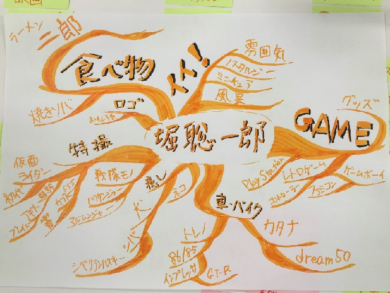

マインドマップ
まずはじめに、自分のことについてマインドマップにまとめた。
改めて見てみると、レトロなものが多かったことに気づいた。

MESH
MESHはiPhoneのアプリと連携させて、特定のアクションを起こすことによって、音楽を流したり、
アラームを鳴らしたり、また、写真を撮ったりできる物である。
私たちのグループは、人感センサーやボタンの機能を使い、ピザの配達システムを考えた。
まず、配達員が家のインターホン（ボタン）を押した時、家の主が不在だった場合、インターホンのモニターに
その日に再配達か、また後日に配達かの連絡が表示され、かつ、配達員の端末にメールが届く。
そして、家を後にするとき、人感センサーが反応し、例ではあるが『クエストクリア！』のようなファンタジー感のある
メッセージが表示される。という仕組みを考えた。
しかし、この部分は未完成でもある。なぜなら、配達員が家に入る時も、出る時にも人感センサーが反応してしまうからだ。
まだまだ改善の余地はあったのでもう少し話し合いたかった。